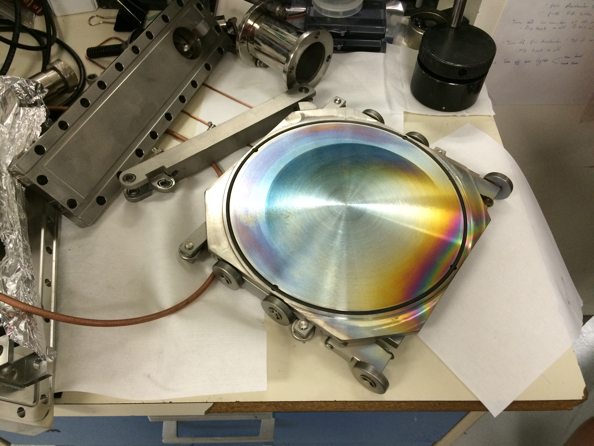

Gate valves are a ubiquitous component in vacuum systems. However, people mostly only see the exterior of these components and rarely the interior. Below is included a photograph of the main gate removed from one of these valves for maintenance. The roller bearings and the Viton sealing ring can be seen clearly along with some discoloration from thin film interference coming from some material that was evaporating inside the chamber.
